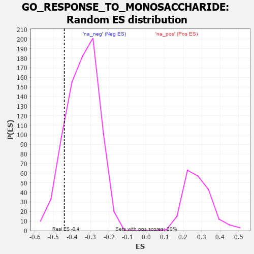

| | | Dataset | 7d |
| Phenotype | NoPhenotypeAvailable |
| Upregulated in class | na_neg |
| GeneSet | GO_RESPONSE_TO_MONOSACCHARIDE |
| Enrichment Score (ES) | -0.44091907 |
| Normalized Enrichment Score (NES) | -1.2756554 |
| Nominal p-value | 0.15125 |
| FDR q-value | 0.5023673 |
| FWER p-Value | 1.0 |
Table: GSEA Results Summary
 Fig 1: Enrichment plot: GO_RESPONSE_TO_MONOSACCHARIDE
Fig 1: Enrichment plot: GO_RESPONSE_TO_MONOSACCHARIDE
Profile of the Running ES Score & Positions of GeneSet Members on the Rank Ordered List
| PROBE | GENE SYMBOL | GENE_TITLE | RANK IN GENE LIST | RANK METRIC SCORE | RUNNING ES | CORE ENRICHMENT | | 1 | ADCY8 | | | 124 | 1.418 | 0.0424 | No |
| 2 | LRP1 | | | 470 | 0.648 | 0.0254 | No |
| 3 | SRF | | | 542 | 0.615 | 0.0417 | No |
| 4 | RMI1 | | | 886 | 0.509 | 0.0192 | No |
| 5 | MEN1 | | | 1003 | 0.483 | 0.0244 | No |
| 6 | LRP5 | | | 1769 | 0.342 | -0.0581 | No |
| 7 | GATA4 | | | 1837 | 0.330 | -0.0530 | No |
| 8 | BRSK2 | | | 1979 | 0.308 | -0.0582 | No |
| 9 | RAF1 | | | 2011 | 0.303 | -0.0497 | No |
| 10 | SIN3A | | | 2361 | 0.251 | -0.0834 | No |
| 11 | PCK2 | | | 2823 | 0.180 | -0.1342 | No |
| 12 | ANO1 | | | 2982 | 0.152 | -0.1479 | No |
| 13 | SARM1 | | | 3432 | 0.086 | -0.2010 | No |
| 14 | LDHA | | | 3479 | 0.080 | -0.2035 | No |
| 15 | FIS1 | | | 3654 | 0.051 | -0.2234 | No |
| 16 | IGF1R | | | 3970 | -0.002 | -0.2630 | No |
| 17 | HNF4A | | | 4157 | -0.034 | -0.2851 | No |
| 18 | PDX1 | | | 4179 | -0.038 | -0.2862 | No |
| 19 | ENY2 | | | 4195 | -0.041 | -0.2864 | No |
| 20 | OPA1 | | | 4330 | -0.065 | -0.3006 | No |
| 21 | CMA1 | | | 4580 | -0.114 | -0.3273 | No |
| 22 | TRA2B | | | 4962 | -0.191 | -0.3676 | No |
| 23 | PTEN | | | 5262 | -0.261 | -0.3946 | No |
| 24 | SIDT2 | | | 5542 | -0.331 | -0.4162 | No |
| 25 | ENSA | | | 5739 | -0.388 | -0.4250 | Yes |
| 26 | ATG7 | | | 5858 | -0.420 | -0.4227 | Yes |
| 27 | CDK16 | | | 5869 | -0.425 | -0.4066 | Yes |
| 28 | PTPRN | | | 6007 | -0.474 | -0.4044 | Yes |
| 29 | XBP1 | | | 6011 | -0.475 | -0.3854 | Yes |
| 30 | RAC1 | | | 6036 | -0.484 | -0.3686 | Yes |
| 31 | EGR1 | | | 6165 | -0.527 | -0.3631 | Yes |
| 32 | SMAD2 | | | 6216 | -0.541 | -0.3473 | Yes |
| 33 | TRPM4 | | | 6390 | -0.612 | -0.3440 | Yes |
| 34 | VAMP2 | | | 6525 | -0.672 | -0.3334 | Yes |
| 35 | MPC2 | | | 6683 | -0.753 | -0.3224 | Yes |
| 36 | PIM3 | | | 6964 | -0.914 | -0.3202 | Yes |
| 37 | CFTR | | | 7143 | -1.030 | -0.3005 | Yes |
| 38 | WDR35 | | | 7357 | -1.225 | -0.2772 | Yes |
| 39 | KCNB1 | | | 7444 | -1.327 | -0.2338 | Yes |
| 40 | CASP3 | | | 7747 | -1.902 | -0.1940 | Yes |
| 41 | GRIK5 | | | 7792 | -2.044 | -0.1158 | Yes |
| 42 | ARRB1 | | | 7935 | -3.377 | 0.0045 | Yes |
Table: GSEA details [plain text format]

Fig 2: GO_RESPONSE_TO_MONOSACCHARIDE: Random ES distribution
Gene set null distribution of ES for GO_RESPONSE_TO_MONOSACCHARIDE